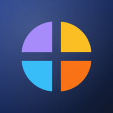

Gizlilik Politikası ve KVKK Aydınlatma Metni
Payday, arkadaş gruplarının ortak harcamalarını tutup kimin kime ne kadar borçlu olduğunu hesaplayan bir uygulamadır. Bu metin, 6698 sayılı Kişisel Verilerin Korunması Kanunu ("KVKK") kapsamında hangi kişisel verilerini neden işlediğimizi, kimlerle paylaştığımızı ve haklarını açıklar.
Kısaca: Verilerini satmayız, reklam göstermeyiz, seni izlemeyiz. Etkinlik bilgilerini yalnızca o etkinliğe dahil ettiğin kişiler görür. Hesabını istediğin an uygulama içinden silebilirsin.
1. Veri sorumlusu
Payday, Majka Solutions tarafından sunulur. Kişisel verilerinle ilgili her türlü soru ve başvuru için: info@majkasolutions.com
2. Hangi verileri işliyoruz?
| Veri | Ne için |
|---|---|
| Hesap: ad, e-posta adresi, şifre | Hesabını oluşturmak, giriş yapmanı sağlamak, e-posta doğrulama ve şifre sıfırlama. Şifren yalnızca geri çevrilemez biçimde (bcrypt) saklanır; biz dahil kimse göremez. |
| Ödeme bilgileri (isteğe bağlı): ad soyad, IBAN | Arkadaşlarının sana borcunu kolayca ödeyebilmesi. Yalnızca girersen saklanır. |
| Etkinlik verileri: etkinlik adları, katılımcı adları (hesabı olmayan misafirler dahil), harcama açıklamaları, tutarlar, tarihler, para birimleri ve kurlar | Uygulamanın temel işlevi: harcamaları kaydetmek ve borçları hesaplamak. |
| Sosyal veriler: arkadaşlık istekleri, arkadaşlar, engellenen kişiler, etkinlik davetleri | Yalnızca arkadaşlarını davet edebilmen ve istemediğin kişileri engelleyebilmen. |
| Teknik veriler: oturum bilgisi (cihaz/tarayıcı türü, giriş ve son kullanım zamanı), hatalı giriş denemesi sayısı, sunucu erişim kayıtlarındaki IP adresi | Hesap güvenliği, kötüye kullanımın ve şifre tahmin saldırılarının engellenmesi. |
Konum, rehber, fotoğraf, reklam kimliği gibi veriler toplamıyoruz. Uygulamada analiz veya reklam takip aracı yoktur.
3. Hukuki sebepler
- Sözleşmenin kurulması ve ifası (KVKK m.5/2-c): hesap, etkinlik ve harcama verileri — uygulamayı kullanabilmen için gerekli.
- Meşru menfaat (KVKK m.5/2-f): güvenlik kayıtları ve kötüye kullanımın önlenmesi.
- Açık rıza (KVKK m.9): verilerin yurt dışındaki sunucularda saklanması (bkz. 5. madde). Kayıt olurken bu rızayı verirsin; dilediğin zaman hesabını silerek geri alabilirsin.
4. Verilerini kimler görür?
- Etkinliklerin: yalnızca o etkinliğin katılımcıları. Davet ettiğin kişi daveti kabul edene kadar etkinliği göremez.
- Adın ve e-postan: arkadaşların, arkadaşlık isteği gönderdiğin/aldığın kişiler ve ortak etkinliğindeki kişiler.
- IBAN'ın ve ad soyadın: yalnızca arkadaşların ve ortak etkinliğindeki kişiler.
- Verilerini hiçbir üçüncü kişiye satmayız ve reklam amacıyla kullanmayız.
5. Hizmet sağlayıcılar ve yurt dışına aktarım
Payday'i çalıştırmak için aşağıdaki hizmetleri kullanıyoruz. Bunlar verilerini yalnızca bizim adımıza, hizmeti sunmak için işler.
| Sağlayıcı | Ne yapar | Konum |
|---|---|---|
| Supabase | Veritabanı ve sunucu (tüm hesap ve etkinlik verileri) | Almanya (AB, Frankfurt) |
| GitHub Pages | Uygulama dosyalarını sunar; erişim kayıtlarında IP adresi görülebilir | ABD |
| Turhost | Doğrulama ve şifre sıfırlama e-postalarını gönderir (e-posta adresin ve adın) | Türkiye |
| Frankfurter (ECB kurları) | Döviz kuru sorgusu; yalnızca para birimi ve tarih gönderilir, kişisel veri gönderilmez (cihazının IP adresi görülebilir) | AB |
6. Ne kadar süre saklıyoruz?
- Hesap verilerin, hesabın açık olduğu sürece saklanır.
- Hesabını sildiğinde adın, e-postan, şifren, IBAN'ın ve arkadaşlıkların hemen silinir. Arkadaşlarının hesapları bozulmasın diye, ortak etkinliklerdeki geçmiş harcama kayıtları yerinde kalır; bu kayıtlarda yalnızca o etkinlikte kullanılan adın misafir olarak görünür.
- Oturumlar 90 gün kullanılmazsa sona erer. E-posta doğrulama linkleri 48 saat, şifre sıfırlama linkleri 1 saat geçerlidir.
- Etkinlik verileri, etkinlik silinene kadar saklanır.
7. Güvenlik
Veritabanına doğrudan erişim kapalıdır; tüm işlemler kimlik doğrulaması yapan sunucu fonksiyonlarından geçer. Şifreler bcrypt ile, oturum anahtarları ve e-posta linkleri yalnızca özet (SHA-256) olarak saklanır. Arka arkaya hatalı girişlerde hesap geçici olarak kilitlenir. Tüm bağlantılar şifrelidir (HTTPS/TLS).
8. Hakların (KVKK m.11)
Kişisel verilerinin işlenip işlenmediğini öğrenme, bilgi talep etme, işleme amacını öğrenme, aktarıldığı kişileri bilme, eksik veya yanlış işlenmişse düzeltilmesini, silinmesini veya yok edilmesini isteme, bu işlemlerin aktarıldığı kişilere bildirilmesini isteme, otomatik sistemlerle analiz sonucu aleyhine bir sonuç çıkmasına itiraz etme ve kanuna aykırı işleme nedeniyle zarara uğrarsan zararın giderilmesini talep etme haklarına sahipsin.
- Adını, e-postanı, şifreni ve IBAN'ını uygulamadaki Profilim → Hesabım bölümünden kendin değiştirebilir, hesabını aynı yerden silebilirsin.
- Diğer talepler için info@majkasolutions.com adresine yazabilirsin; en geç 30 gün içinde yanıtlarız.
- Yanıtımızdan memnun kalmazsan Kişisel Verileri Koruma Kurulu'na şikâyette bulunabilirsin.
9. Çocuklar
Payday 13 yaşından küçük çocuklara yönelik değildir ve bilerek onlardan veri toplamayız.
10. Değişiklikler
Bu metni güncellediğimizde yukarıdaki tarihi değiştiririz; önemli değişiklikleri uygulama içinde duyururuz.
← Payday'e dön